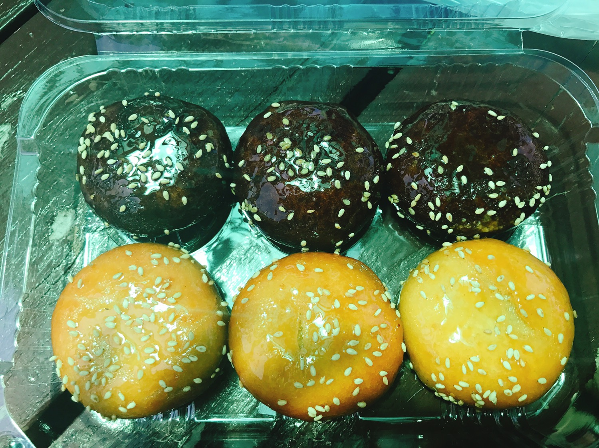
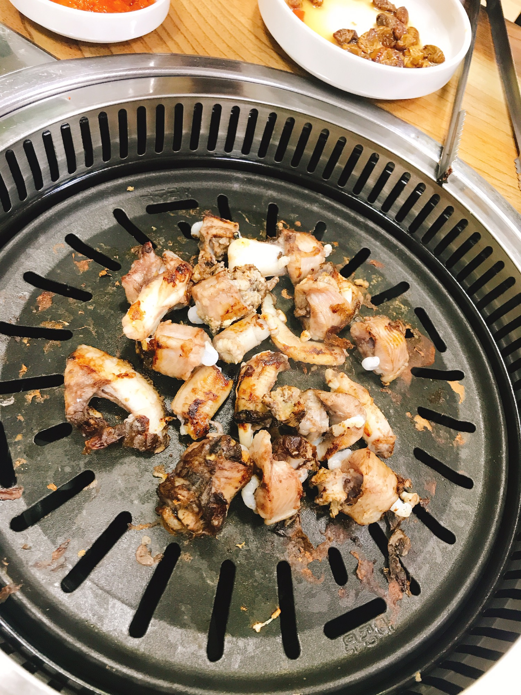

1. 꿀빵

꿀빵이라는 것을 통영에 와서 처음 들어봤다.
꿀빵은 겉에는 물엿이 잔뜩 발려 있고, 그 위에 깨를 뿌려 달콤하면서 고소했다.
겉에는 물엿이 있어 찐득하지만 안에 앙금이 들어있어 달달해 너무 맛있었다.
통영에 놀러왔다면 꿀빵은 무조건 추천!!
2. 꼼장어

통영하면 생각나는 음식은 바로 바로 꼼장어!!
싱싱한 꼼장어를 불판위에 바로 구워 먹어 정말 신선했다.
일반 장어는 부드럽지만 꼼장어는 오독오독 씹는 맛이 일품이다.
생각보다 비리지 않고, 정말 잊을 수 없는 맛이 였다.
통영에 놀러왔다면
꼼장어 다들 먹어보세요!!